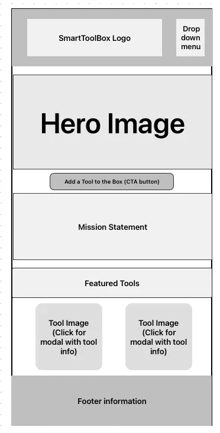
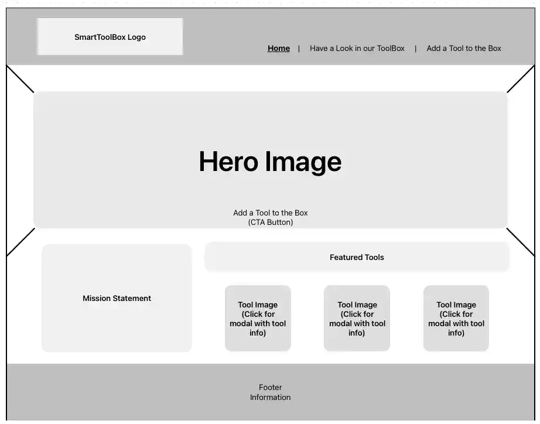

Site Name & Rationale
Name: SmartToolbox
Reason for Name: The name plays on a double meaning—the website itself serves as a digital "toolbox" for visitors, while highlighting tools and kitchen gadgets that are smart, time-saving finds.
Domain: smart-toolbox.org
Site Purpose:
To help busy households discover practical, time-saving tools and kitchen gadgets through an organized directory, interactive details, and a community submission form with hopes to become more of a forum website where people can add to and discuss the tools in the box.
Target Audience Scenarios
Scenario 1: "What is a safe, easy-to-clean gadget that can speed up daily food prep like chopping or grating?"
Scenario 2: "How can I submit a recommendation for a clever tool I use at home so others can find it?"
Color Schema
This site plan uses the following defined brand color palette:
- Primary Brand Color(#0707e4): Used for header backgrounds, major titles, and primary action buttons.
- Secondary Accent (#f6d309): Used for button highlights, badge accents, and focus borders.
- Main Background (#F5F5F5): Used for general page body background.
- Card Background (#F8F8FF): Used for tool directory item container backgrounds.
- Primary Text (#304250): Used for body copy and main reading text.
- Secondary Text (#212a31): Used for navigation links, borders, and footer details.
Typography
Heading Font (Acme): Applied to all main section headers (<h1>,
<h2>, and <h3>) for a bold, distinctive, and structured brand
look.
Body Font (Roboto): Applied to body paragraphs, list items, navigation links, and form labels for crisp legibility.
5. Wireframes
Mobile View (Small Screen)

Desktop View (Wider Screen)
